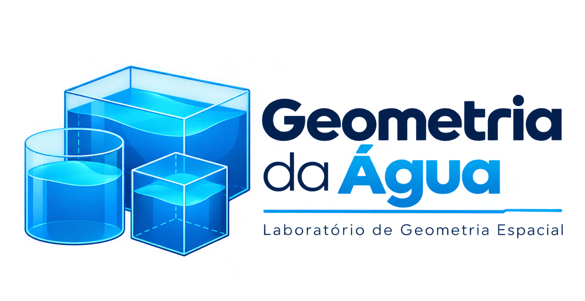

Investigar, não só calcular
Cada missão pede experimentação: você salva vários projetos numa tabela, compara as linhas e escolhe um para concluir. O site oferece dicas graduais, nunca a resposta pronta.

Você é um engenheiro em formação. Dimensione reservatórios, teste hipóteses, compare projetos e escolha o melhor com Geometria Espacial.
Cada missão pede experimentação: você salva vários projetos numa tabela, compara as linhas e escolhe um para concluir. O site oferece dicas graduais, nunca a resposta pronta.
Relacionar dimensões, área de material e volume; converter m³ e litros; distinguir reservatório aberto de fechado; perceber que solução viável não é, necessariamente, solução ótima.
Paralelepípedo, cubo e cilindro vertical, com 5 missões geométricas, um mapa investigativo sobre desigualdades no acesso à água e tabela de projetos imprimível. A visualização 3D é desenhada no próprio navegador, sem internet. O site apoia, mas não garante, um cenário para investigação: isso depende do planejamento do professor e da participação da turma (Skovsmose, 2000).
Nas Missões 1 a 5, preços e limites são dados didáticos, não reais.
Defina condições opcionais. Limites técnicos: 12 m por dimensão (raio até 6 m).
Salve vários projetos, compare as linhas (as setas ▲▼ mostram a variação em relação ao projeto anterior) e escolha um deles para concluir a missão.
Cada fórmula abaixo traz: o desenho, o que significa cada letra, por que ela funciona e um exemplo com números. Os valores são didáticos.
A = c · l
Por quê? O desenho divide a superfície em quadradinhos: são c fileiras com l quadradinhos cada.
A = π · r²
Por quê? A área do círculo equivale a π quadrados de lado r.
Por quê V = Ab · h? São h camadas iguais empilhadas, cada uma com volume Ab.
O cubo é um paralelepípedo com c = l = h = a.
Mais material não significa, sempre, mais capacidade: área e volume são grandezas diferentes.
1m³ = 1.000L